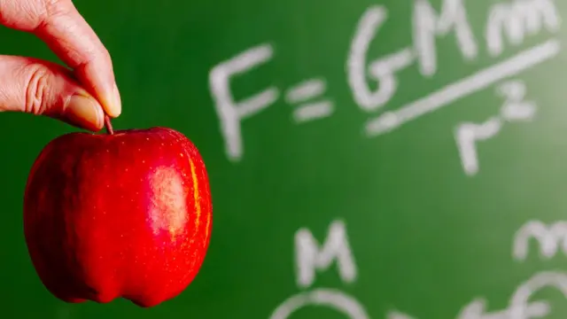
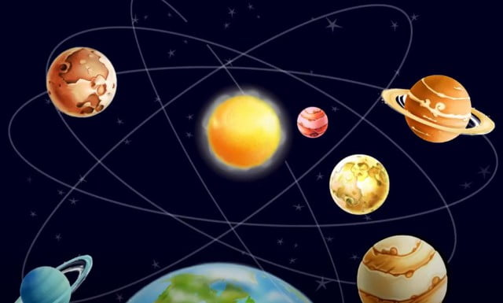
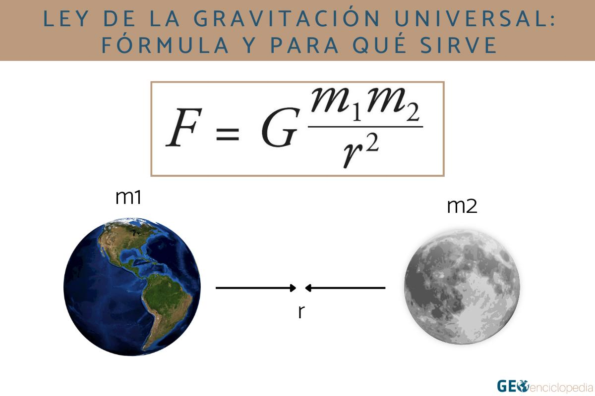
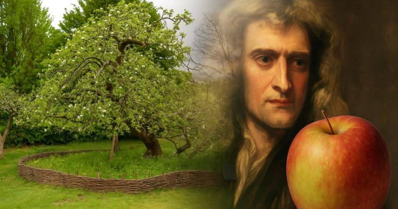

La Ley de Gravitación Universal de Newton, formulada por Sir Isaac Newton en su obra Philosophiæ Naturalis Principia Mathematica (1687), representa un hito fundamental en la historia de la ciencia y la física. Esta ley no solo proporcionó un marco matemático riguroso para describir la fuerza de atracción entre los cuerpos celestes, sino que también unificó la física terrestre y celeste, demostrando que las mismas leyes que rigen la caída de un objeto en la superficie de la Tierra controlan el movimiento de los planetas alrededor del Sol.
El principio central de esta ley postula que toda partícula de materia en el universo atrae a cualquier otra partícula con una fuerza directamente proporcional al producto de sus masas e inversamente proporcional al cuadrado de la distancia que separa sus centros.
Si bien la teoría de Newton dominó la física durante más de dos siglos y sigue siendo fundamental para la mayoría de las aplicaciones prácticas—desde el cálculo de trayectorias de satélites artificiales hasta las misiones espaciales—, es crucial reconocer sus limitaciones. La ley de Newton falla en predecir con exactitud fenómenos en campos gravitatorios extremadamente fuertes o a velocidades cercanas a la de la luz, escenarios que requieren el marco más avanzado de la Teoría de la Relatividad General de Albert Einstein. No obstante, la Ley de Gravitación Universal permanece como un pilar indispensable de la física y un testimonio del poder del razonamiento deductivo y la observación empírica.
LA HISTORIA DE LA MANZANA
La historia de la manzana que cae del árbol, aunque pueda ser en parte mitológica, simboliza el poder de la observación y de la curiosidad científica. Newton se preguntó por qué la manzana caía siempre recta hacia abajo y no en cualquier otra dirección, lo que le llevó a desarrollar su Ley de la Gravitación Universal.
Así, la historia popular de Newton y la manzana se posiciona como una anécdota que ha perdurado en el tiempo, convirtiéndose en una especie de mito fundacional de la ciencia moderna. Según la leyenda, Newton estaba sentado bajo un manzano en el jardín de su casa, en Woolsthorpe cuando una manzana cayó al suelo. Este evento cotidiano que, en realidad había presenciado cientos de veces, le despertó una nueva incógnita: ¿por qué la manzana caía siempre perpendicular al suelo, y no hacia los lados o hacia arriba? Según el relato, esa pregunta le hizo pensar en la existencia de una fuerza que atraía a los objetos hacia la Tierra.
No obstante, no hay ninguna verificación de que esta historia sea real. La primera referencia escrita sobre la manzana proviene de las notas de William Stukeley, un amigo de Newton, quien escribió ese relato en una biografía redactada en 1752, muchos años después de la muerte del científico. En palabras de Stukeley, Newton comentó que la caída de la manzana lo llevó a considerar que “la fuerza de gravedad no se limitaba a una cierta distancia de la Tierra, sino que debía extenderse mucho más allá”. Esa intuición fue clave para el desarrollo de la Teoría de Gravitación Universal, que postula que la misma fuerza que hace caer una manzana al suelo es la que mantiene a los planetas en sus órbitas.
Realidad o ficción, la anécdota de la manzana es un gran símbolo de la cómo la observación cotidiana puede llegar a inspirar descubrimientos realmente revolucionarios. Newton aplicó su brillante capacidad de análisis a esa simple visión y, a partir de ahí, desarrolló una teoría completa que cambió instantáneamente la comprensión del Universo. Es quizás ese enfoque integrador el que ha cimentado a Newton como una figura central en la historia de la ciencia.

Historia

La Ley de la Gravitación Universal fue descubierta por el aclamado científico británico Isaac Newton en el siglo XVII. Newton fue inspirado a desarrollar esta ley debido a una famosa anécdota en la que una manzana cayó sobre su cabeza mientras estaba sentado bajo un árbol. Este evento lo llevó a reflexionar sobre la gravedad y cómo funciona en el universo.
Antes de Newton, otros científicos como Galileo Galilei y Johannes Kepler habían realizado estudios previos sobre la gravedad. Galileo demostró que todos los objetos caen al mismo ritmo, independientemente de su masa, mientras que Kepler descubrió que los planetas se mueven alrededor del sol en órbitas elípticas.
La ley, simple y universal, fue un éxito tanto por la forma que se correspondía con lo observable como por las posibilidades de aplicación a una amplia variedad de fenómenos. Por ejemplo, con una explicación muy simple seguida de una fórmula elegante, Newton explicó que la Luna se mantenía en su órbita alrededor de la Tierra gracias a la atracción gravitatoria que el planeta ejercía sobre ella; y al mismo tiempo, la Luna ejercía una fuerza sobre la Tierra, aunque mucho menos perceptible debido a su masa inferior.
Además de explicar fenómenos observables, la Ley de Gravitación Universal de Newton permitió también hacer predicciones precisas sobre eventos futuros, como eclipses o la posición de los planetas en el cielo. Esta capacidad de explicar sucesos pasados, presentes y futuros que ocurren tanto en la Tierra como en el Universo, provocó que su ley se instaurara como un marco unificador para la física, demostrando que los mismos conjuntos de principios son aplicables a una amplia gama de situaciones. Este concepto, aunque ahora mejorado con la física contemporánea, sigue siendo un principio fundamental en la mecánica clásica.
Definición de la Ley de la Gravitación Universal

La Ley de la Gravitación Universal establece que cualquier objeto con masa atrae a otros objetos con una fuerza proporcional a la masa de los objetos y la distancia entre ellos. La formulación matemática de esta ley se expresa de la siguiente manera:
Donde F representa la fuerza gravitacional entre los dos objetos, G es la constante de gravitación universal, m1 y m2 son las masas de los objetos y r es la distancia entre ellos.
La ley de gravitación universal nos permite explicar cómo los planetas orbitan alrededor del sol siguiendo trayectorias elípticas conforme a las leyes de Kepler en determinar las órbitas de los satélites artificiales cálculo de trayectorias espaciales etcétera.
La siguiente tabla muestra los valores para los planetas del sistema solar:
Aplicaciones e Importancia
Aunque la teoría de la relatividad general de Einstein ofrece una descripción más precisa de la gravedad como una curvatura del espacio-tiempo, la ley de Newton sigue siendo válida y extremadamente útil para la mayoría de las aplicaciones prácticas donde la gravedad es débil y las velocidades son mucho menores que la de la luz.
Sus aplicaciones incluyen:
- Mantenernos en la superficie terrestre y sostener la atmósfera y los océanos.
- Explicar las órbitas de planetas, lunas y satélites artificiales.
- Predecir la existencia y ubicación de planetas (como Neptuno, que fue descubierto mediante cálculos basados en esta ley).
- Comprender la estructura a gran escala del universo y las galaxias.
Conclusión

La Ley de la Gravitación Universal de Isaac Newton, presentada en sus Principia Mathematica en 1687, es mucho más que una simple fórmula física; es una conclusión trascendental que unificó el cosmos y sentó las bases de la ciencia moderna. Su impacto va más allá de la mera descripción de la realidad, ofreciendo una visión del universo como un sistema ordenado, predecible y gobernado por principios matemáticos consistentes.
El principal logro de esta ley fue la unificación de la física terrestre y la celeste. Antes de Newton, se creía que existían leyes diferentes para los cielos perfectos y la Tierra imperfecta. La ley de Newton demostró que la misma fuerza que hace caer una manzana de un árbol es la que mantiene a la Luna en órbita alrededor de la Tierra y a los planetas girando alrededor del Sol, proporcionando una coherencia cósmica sin precedentes. La gravedad se reveló como una fuerza verdaderamente "universal", actuando entre cada par de masas en el universo.
En un plano más profundo, la ley nos enseña que la gravedad es la arquitecta silenciosa del universo estructurado que observamos. Es la fuerza responsable de que la materia se aglomere para formar estrellas, planetas y galaxias masivas. Sin esta atracción mutua constante, el cosmos, tal como lo conocemos, simplemente se desmoronaría. Esta fuerza, que disminuye con el inverso del cuadrado de la distancia, asegura la estabilidad de las órbitas y el equilibrio dinámico del sistema solar.
Finalmente, desde una perspectiva práctica y tecnológica, la Ley de la Gravitación Universal es la piedra angular de nuestra capacidad para interactuar con el espacio. Los cálculos precisos derivados de esta ley han permitido a los astrónomos predecir fenómenos celestes como las mareas y los eclipses, y han hecho posible la ingeniería espacial moderna, desde el lanzamiento de satélites artificiales y sondas interplanetarias hasta la planificación de misiones tripuladas. A pesar de los refinamientos posteriores de Albert Einstein con la relatividad general para campos extremos, la ley de Newton sigue siendo una herramienta de una precisión y aplicabilidad asombrosas para la mayoría de las necesidades humanas y científicas.